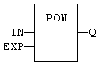
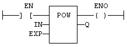

Function
Calculates a power.
|
Name |
Type |
Description |
|
IN |
REAL/LREAL |
Real value. |
|
EXP |
REAL/LREAL |
Exponent. |
|
Name |
Type |
Description |
|
Q |
REAL/LREAL |
Result: IN at the 'EXP' power. |
In ST, the ** operator may be used. In LD, the operation is executed only if the input rung (EN) is TRUE. The output rung (ENO) keeps the same value as the input rung. In IL, the input must be loaded in the current result before calling the function. The exponent (second input of the function) must be the operand of the function.
Q := POW (IN, EXP);
Q := IN ** EXP;

The function is executed only if EN is TRUE.
ENO keeps the same value as EN.
